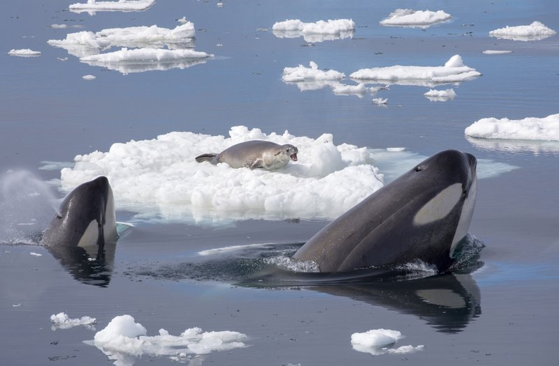
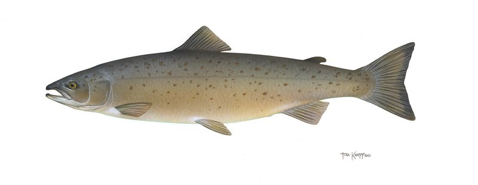
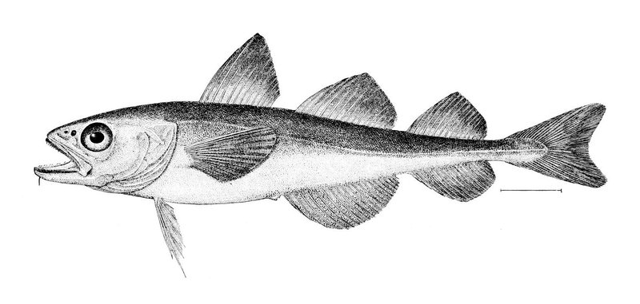

--
有机污染物样本--
微塑料样本--
平均THC mg/kg--
最高微塑料 µg/kg污染物指标
低浓度 Low
中浓度 Medium
高浓度 High
6种关键PAH平均浓度对比
PCB7 各同系物平均浓度对比
2006-2021 PAH / PCB / THC 年度均值
各深度区间THC、BaP、PCB浓度变化
2011-2021 微塑料颗粒数及浓度年度变化
PFAS & Siloxanes 平均浓度
挪威海峡污染对北极及北大西洋海洋生物造成持续威胁

受威胁 TH
虎鲸 Killer Whale / Orca
Orcinus orca
挪威海域的顶级捕食者，被誉为"海洋之王"。持久性有机污染物(POPs)通过食物链在虎鲸体内富集，导致繁殖障碍和免疫系统损伤，挪威沿海种群数量锐减。
POPs富集
PFAS污染
微塑料

近危 NT
大西洋鲑 Atlantic Salmon
Salmo salar
挪威是全球最大的大西洋鲑养殖国，野生种群却因养殖逃逸、海虱传播、化学污染物排放而急剧减少。多氯联苯(PCBs)和二噁英在鱼肉中检出率居高不下。
PCBs污染
养殖污染
海虱病害

关注 LC
北极鳕 Arctic Cod / Polar Cod
Boreogadus saida
北极生态系统的关键种，是海豹、海鸟和鲸类的核心食物来源。气候变化导致海冰融化、微塑料在北极水域累积，北极鳕仔鱼误食微塑料比例高达35%。
气候变暖
微塑料摄入
食物链断裂